Putting words, ideas, and stories to work for your business
Brass Tack Communications has been creating crisp, creative, and effective messaging and copy for production companies, ad agencies, graphic design firms, and corporations for more than 25 years. We’re ready to do the same for you.
Selected work

Video
Scripts and story direction for brand films, explainers, customer stories, and social video.
Articles, white papers, & e-books
Long-form thought leadership that makes technical subject matter readable.
Online and Print Collateral
Info sheets, datasheets, brochures, and infographics that make a complicated product easy to understand.
Advertising
Brand-level campaigns that run across print, web, social, and video.
Events
General sessions, theater presentations, and virtual conferences, written and content-managed end to end.
Web
Product pages and ghostwritten blog programs that keep a site working.Clients
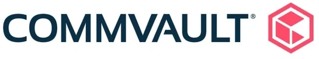
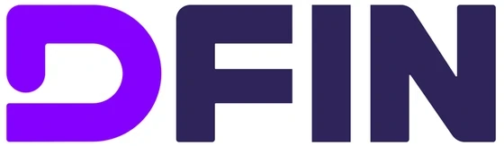
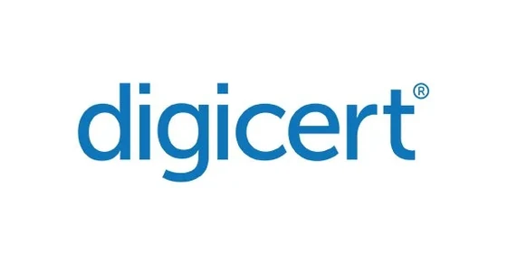
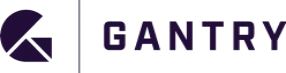
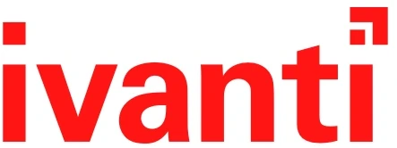
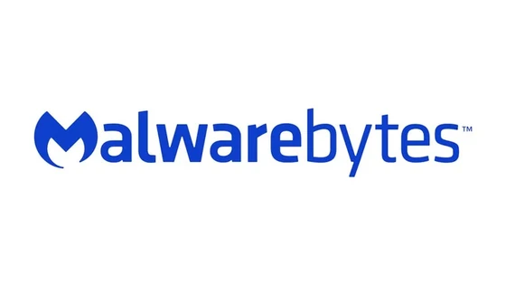
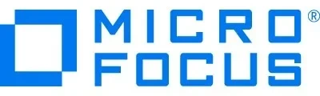
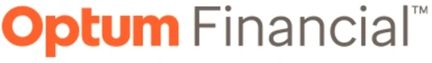
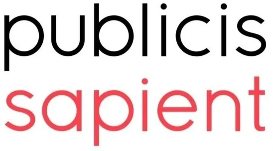
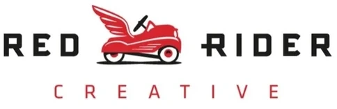
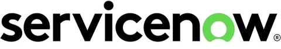
What we do
Whether it’s developing a detailed messaging framework for a full brand awareness campaign, creating a detailed production script for your next user conference general session, or ghostwriting a short blog article, Brass Tack has the skills and experience to complement and enhance your internal content and marketing teams. Check out the range of content services we offer and contact us to learn more.
All services-
Content strategy
Brass Tack is prepared to work with your team to build the kinds of sound, thoughtful, and cohesive content and messaging strategies that lead to successful outcomes.
-
Messaging development
Every successful product launch, campaign, or program starts with a strong, unified messaging foundation that feeds and informs every deliverable. Brass Tack can help you build messaging structures and frameworks that communicate the right story, the right way, to the right audience.
-
Concept development
Content strategy and messaging define your story. A strong creative concept brings it to life, gives it a personality, and makes it real and compelling for your audience. Brass Tack works with trusted design and production partners to create memorable creative concepts that make an impression and get results.
-
Copywriting and scriptwriting
You can always count on Brass Tack to write crisp, compelling, and professional copy that captures your brand voice, relates to your audience, and clearly communicates the right message—from short-form ad copy, web content, and video scripts to longer-form blog articles, e-books, and white papers.
-
Event content management
Live and virtual conferences often feature dozens of speakers sharing content and engaging with audiences in general sessions, breakouts, and other activities. Brass Tack will make sure they’re prepared to represent your brand well and tell an authentic story in a clear, cohesive, and professional way.
-
Onsite support
Successful events are defined by relevant and engaging content. We’ll help make sure your executives and subject matter experts deliver—with onsite scripting, speaker coaching, speaker management, and other content-related services.
In the age of AI, quality control matters more than ever.
It has never been easier to produce a large volume of content, or harder to produce content worth reading.
We use AI where it earns its place, for research, early drafts, and structure. Everything is then directed, revised, and cross-checked by an experienced human, because judgment is what decides whether any of it is worth reading.
We build in responsible AI search optimization too, so your content is found, read, and cited correctly by the assistants people now search with. Strong writing first, everything else in service of it.